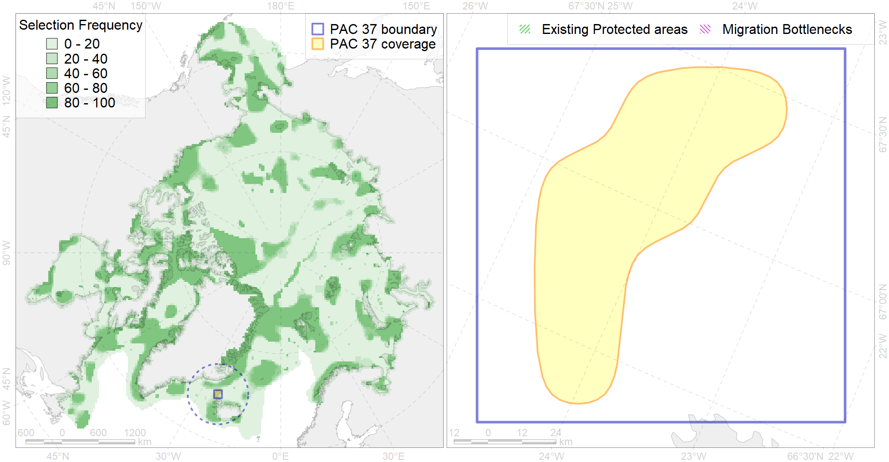

Region 37
Region 37
“ArcNet” scenario 33 achievement for region 37.
Use Accenter for advanced mode.

0
CFs inside of Region completely
0
CFs inside of Region at quarter
0
Complete-targets achievement by Region
1
Half-targets achievement by Region
| CF | Name | Target Achievement for Region | Proportion of Target Achievement in Region | Amount Proportion in Region |
|---|---|---|---|---|
| 3024 | Marginal Ice Zone distribution in April in the Iceland LME | 57.7% | 36.2% | 11.9% |
| 7211 | V.1.2. North Iceland slope | 32.5% | 29.8% | 8.9% |
| 7210 | V.1.1.2. North Iceland glacial troughs | 7.5% | 5.9% | 2.7% |
| 7209 | V.1.1.1. North Iceland medium and low profile shelf | 10.0% | 4.6% | 2.5% |
| 4086 | Fish zoogeography, Arctic Region, Subarctic Transitional-Atlantic Province, Iceland District | 6.4% | 3.9% | 2.4% |
| 5055 | Harbour porpoise feeding areas in Iceland | 15.7% | 2.5% | 1.7% |
| 7029 | Iceland region | 5.2% | 2.3% | 1.4% |
| 6086 | Long-tailed duck (Clangula hyemalis) Iceland moulting&migration stopovers | 1.1% | 1.1% | 1.1% |
| 5066 | Minke whale feeding areas in the Central Atlantic | 4.6% | 1.4% | 1.0% |
| 6101 | 6101 Uriaalge aalge breeding colonies | 1.3% | 0.9% | 0.8% |
| 5059 | Humpback whale summer feeding areas in the Eastern Greenland and Iceland | 3.4% | 1.1% | 0.7% |
| 7208 | V.1.1. North Iceland shelf | 1.9% | 1.2% | 0.6% |
| 5037 | Blue whale summer feeding areas in the Northeast Atlantic | 1.2% | 0.9% | 0.5% |
| 4064 | Range of the Smooth polar sculpin (Cottunculus subspinosus) (F 52) | 4.7% | 1.0% | 0.5% |
| 6002 | Little Auk (Alle alle alle) winetring grounds | 0.7% | 0.5% | 0.3% |
| 3025 | Marginal Ice Zone distribution in April in the Greenland Sea LME | 0.4% | 0.4% | 0.3% |
| 6106 | 6106 Urilomvilomvibreeding colonies | 0.3% | 0.2% | 0.3% |
| 6076 | Common murre (Uria aalge aalge) wintering grounds | 0.8% | 0.4% | 0.3% |
| 6049 | Black-legged kittiwake (Rissa tridactyla tridactyla) wintering grounds | 0.4% | 0.4% | 0.2% |
| 6099 | 6099 Rissa tridactyla tridactyla breeding colonies | 0.2% | 0.2% | 0.2% |
| 6023 | Atlantic puffin (Fratercula arctica naumanni) wintering grounds | 0.5% | 0.4% | 0.2% |
| 4032 | Range of the Arctic skate (Amblyraja hyperborea) (F2) | 3.4% | 0.3% | 0.2% |
| 4049 | Range of the Haddock (Melanogrammus aeglefinus) (F 42) | 1.7% | 0.3% | 0.2% |
| 2019 | Harbour seal range in the North Atlantic region | 1.4% | 0.2% | 0.2% |
| 4046 | Range of the Thorny Skate (Amblyraja radiata) (F 3) | 1.0% | 0.2% | 0.1% |
| 4045 | Feeding/migration area of the Pink Salmon (Oncorhynchus gorbuscha), native distribution (F23) | 1.1% | 0.2% | 0.1% |
| 4059 | Range of the Greenland Halibut (Reinhardtius hippoglossoides) (F 49) | 2.2% | 0.2% | 0.1% |
| 6083 | Thick-billed murre (Uria lomvia lomvia) wintering grounds | 0.3% | 0.2% | 0.1% |
| 4057 | Range of the American Plaice (Hippoglossoides platessoides) (F 47), American populations | 1.9% | 0.2% | 0.1% |
| 4003 | Range of the Atlantic Capelin (Mallotus villosus) (F10) | 2.0% | 0.2% | 0.1% |
| 4017 | Feeding/ migration area of the Greenland Shark (Somniosus microcephalus) (F1) | 0.3% | 0.2% | 0.1% |
| 4054 | Range of the Shorthorn Sculpin (Myoxocephalus scorpius) (F 46), European populations | 1.7% | 0.1% | 0.1% |
| 4037 | Distribution of the Glacial cod (Arctogadus glacialis) (F34) | 0.6% | 0.1% | 0.1% |
| 4027 | Feeding/migration area of the Atlantic salmon (Salmo salar) American populations (F27) | 0.2% | 0.1% | 0.1% |
| 4079 | Fish zoogeography, Arctic Region, Arctic Abyssal Province (11A -Scandian, 11B - Central-Arctic and 11C - Baffin Deep-sea Districts ) | 0.8% | 0.1% | 0.1% |
| 2017 | Grey seal distribution range | 0.4% | 0.1% | 0.0% |
| 5112 | Arctic Cetaceans (beluga, bowhead, narwhal) winter habitats as predicterd by MIZ | 0.0% | 0.0% | 0.0% |
| 4041 | Range of the Polar Cod (Boreogadus saida) (F35) | 0.2% | 0.1% | 0.0% |
| 7184 | VI.1. Greenland Sea and Fram Strait Basin rises VI.1.1. Plateaus | 0.0% | 0.0% | 0.0% |
| 9006 | polar bear of the EG (East Greenland) subpopulation distribution | 0.0% | 0.0% | 0.0% |